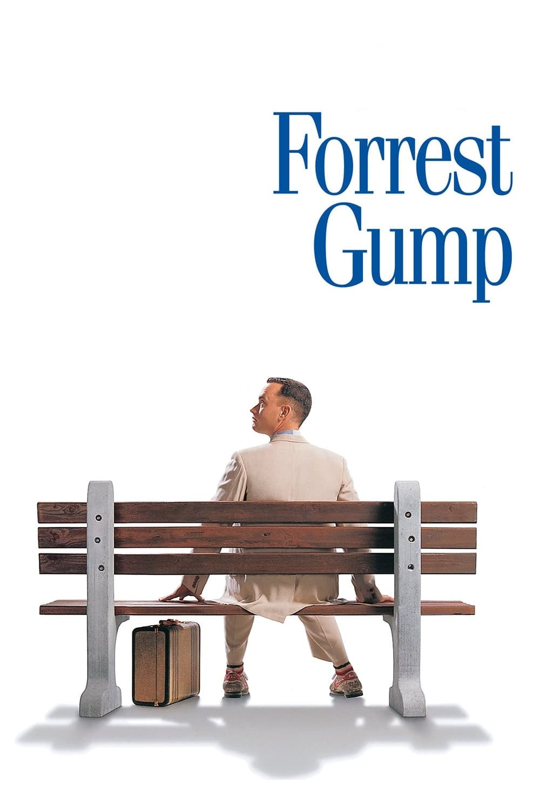

Pursuite Of Happiness

Based on a true story about a man named Christopher Gardner. Gardner has invested heavily in a device known as a "bone density scanner". He feels like he has it made selling these devices. However, they do not sell well as they are marginally better than x-ray at a much higher price. As Gardner works to make ends meet, his wife leaves him and he loses his apartment. Forced to live out in the streets with his son, Gardner continues to sell bone density scanners while concurrently taking on an unpaid internship as a stockbroker, with slim chances for advancement to a paid position. Before he can receive pay, he needs to outshine the competition through 6 months of training, and to sell his devices to stay afloat.
Forrest Gump
Forrest Gump is a simple man with a low I.Q. but good intentions. He is running through childhood with his best and only friend Jenny. His 'mama' teaches him the ways of life and leaves him to choose his destiny. Forrest joins the army for service in Vietnam, finding new friends called Dan and Bubba, he wins medals, creates a famous shrimp fishing fleet, inspires people to jog, starts a ping-pong craze, creates the smiley, writes bumper stickers and songs, donates to people and meets the president several times. However, this is all irrelevant to Forrest who can only think of his childhood sweetheart Jenny Curran, who has messed up her life. Although in the end all he wants to prove is that anyone can love anyone.
Prestige
In the end of the nineteenth century, in London, Robert Angier, his beloved wife Julia McCullough, and Alfred Borden are friends and assistants of a magician. When Julia accidentally dies during a performance, Robert blames Alfred for her death, and they become enemies. Both become famous and rival magicians, sabotaging the performance of the other on the stage. When Alfred performs a successful trick, Robert becomes obsessed trying to disclose the secret of his competitor with tragic consequences.
The Shawshank Redemption

Chronicles the experiences of a formerly successful banker as a prisoner in the gloomy jailhouse of Shawshank after being found guilty of a crime he did not commit. The film portrays the man's unique way of dealing with his new, torturous life; along the way he befriends a number of fellow prisoners, most notably a wise long-term inmate named Red
Inception

A thief who steals corporate secrets through the use of dream-sharing technology is given the inverse task of planting an idea into the mind of a C.E.O., but his tragic past may doom the project and his team to disaster.